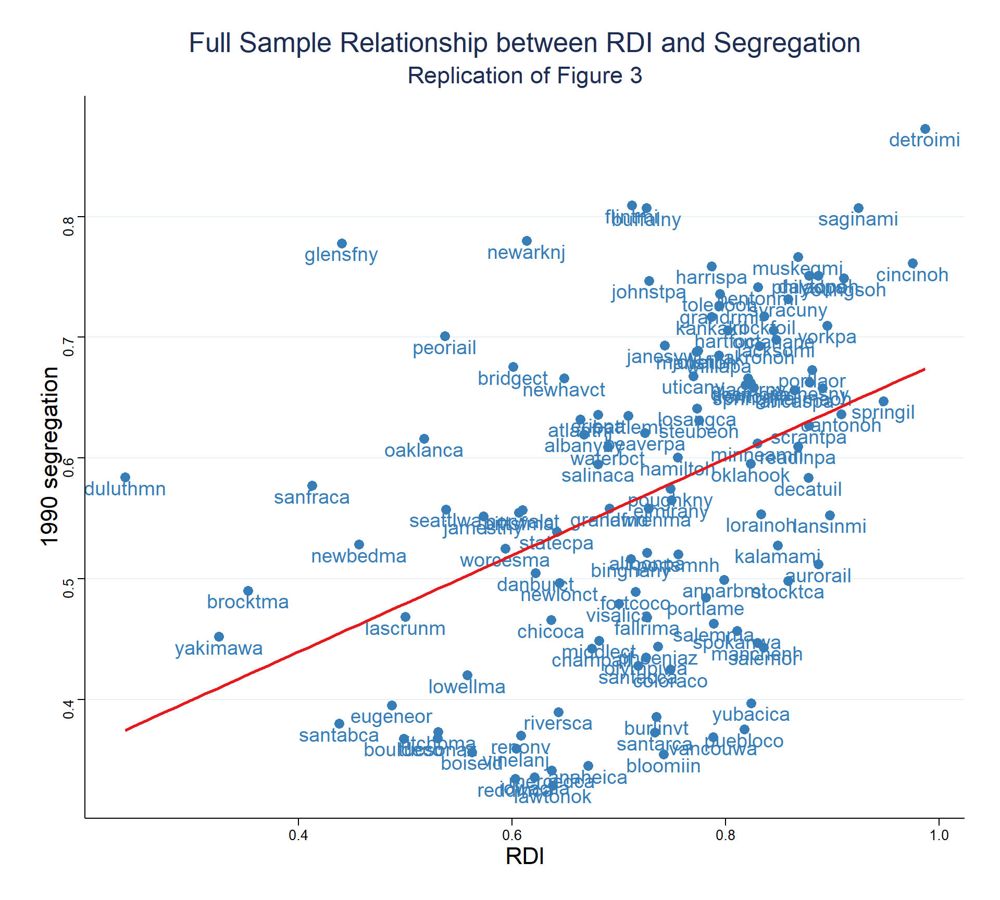
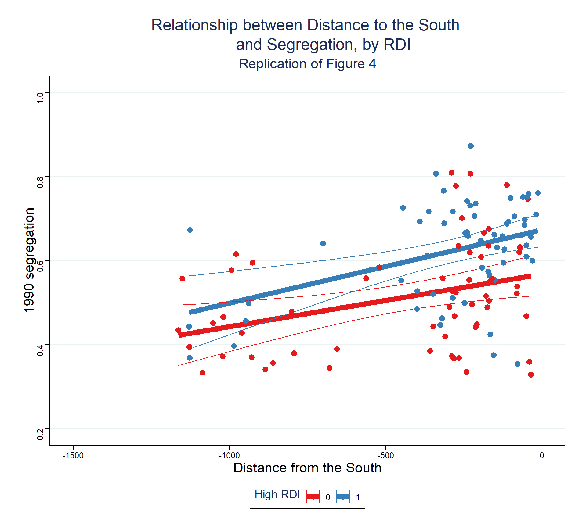

# Packages used
library(tidyverse)
library(stargazer)
library(haven)
library(ggthemes)
library(estimatr)
library(magrittr)
library(modelsummary)
library(huxtable)
library(kableExtra)
library(sjPlot)
library(texreg)
library(fixest)Replication - Ananat (AER, 2011) - The Wrong Side(s) of the Tracks: The Causal Effects of Racial Segregation on Urban Poverty and Inequality
Replication of the Paper - Ananat 2011
Introduction
Although there seems to exist a striking negative correlation between racial segregation and population characteristics, this relationship may not be causal. Segregation holds a longstanding position as one of the prime suspects in explaining the persistent economic inequality between blacks and whites as more segregates cities, on average, have worse characteristics than less segregated cities, which is evident on measures ranging from infant mortality to educational achievement ( Douglas S. Massey and Nancy A. Denton 1993). However, several researchers remain skeptical on the causal influence of segregation on individual labor market outcomes and human capital outcomes. This skepticism can be summarized by two main reasons : Omitted variable bias and endogenous migration. For the first case it might be that some unmeasured economic or political attribute may lead cities to have both more segregation and more negative characteristics. For the second case it might be that people dislike segregation and those with higher wages migrate.
This paper examines the causal effects of racial segregation on labor market outcomes and human capital accumulation. It uses the exogenous variation of the configuration of railroad tracks configuration on american cities prior to the Great Migration, from 1915 to 1950. Historical records suggests that railroad configuration choices were determined by orientation of destinations and variation in ground slope, thus serving as an exogenous instrument. With this the author can study the phenomenon of the “wrong side of the tracks” by showing that cities that were subdivided by railroads into greater number of physically defined neighborhoods became significantly more segregated after the Great Migration. So using this instrument the author finds that increasing segregation increases inequality between a city’s blacks and whites, and lowers average outcomes within the city’s black community, while reducing inequality within the city’s white community.

Data sources
For this paper the author uses historical maps of railroad to measure the potential for segregation in different cities. Using the 19th-century maps of railroad lines across 121 cities, and focusing on a 50-square kilometer circular area centered at the historical city center, ensures that, while all cities today exceed this perimeter, about 75% of the cities were smaller than this area when the maps were created. Therefore, the measure largely includes railroads that were laid on unoccupied land, eliminating the need to consider human occupants.
The researcher meticulously identified each railroad track within this four-kilometer-radius circle, measured its length, and calculated the area of the “neighborhoods” created by its intersections with other railroads.
The key measure in this study is the “railroad division index” (RDI), a variation on a Herfindahl index that quantifies the extent to which a city’s land is divided into smaller units by railroads.
If a city was completely undivided by railroads, meaning the area of its single neighborhood was 100% of the total city area, then the RDI would be 0. Conversely, if a city was infinitely divided by railroads, so each neighborhood had a nearly negligible area, the RDI would be 1.
The RDI can be calculated as:
\[ R D I=1-\sum_i\left(\frac{\text { area }_{\text {neighborhoodi }}}{\text { area }_{\text {total }}}\right)^2 \]
The RDIis a measure of possible boundaries within a city. A higher RDI (indicating many small neighborhoods) would suggest that it was easier to segregate the city during the Great Migration by allowing black enclaves to expand into another neighborhood while maintaining a new railroad barrier between the enclave and the rest of the city. This higher RDI could have facilitated persistent segregation even as the black population increased.
In order to measure the level of segregation the author uses a different measure, the dissimilarity index , to quantify the actual level of racial segregation in the cities. The dissimilarity index captures the degree to which two groups (in this case, African American households and other households) are evenly spread across a city’s census tracts.
The dissimilarity index is calculated as:
\[ \text { Index of dissimilarity }=\frac{1}{2} \sum_{i=1}^N\left|\frac{\text { black }_i}{\text { black }_{\text {total }}}-\frac{\text { nonblack }_i}{\text { nonblack }_{\text {total }}}\right| \text {, } \]
The interpretation of the dissimilarity index is as it follow: If African American households were evenly distributed across the city’s tracts, the dissimilarity index would be close to 0, indicating full integration. However, in the scenario where African American households were concentrated in specific tracts and not present in others, the dissimilarity index would be close to 1, indicating total segregation.
In a hypothetical scenario, for a city with 62 tracts that is 10 percent black, the average dissimilarity index would be 0.029 (standard deviation 0.0028) if African American households were randomly assigned across tracts. However, in reality, the mean index was found to be 0.57 (standard deviation 0.135), which indicates a significant level of segregation.
To make these measurements, the study employs the Cutler/Glaeser/Vigdor segregation data available online. This dataset comprises segregation indices from various decennial censuses, spanning the 19th and 20th centuries, along with metropolitan characteristics. The data is an output of research work by Cutler and Glaeser (1997), and Cutler, Glaeser, and Vigdor (1999).
Main Specification
The main specification of the IV approach in the context will be:
\[ \begin{aligned} S e g & =\alpha_1 R D I+\alpha_2 \mathbf{X}+\mu &\text{(First Stage)} \\ Y & =\beta_1 S e g+\beta_2 \mathbf{X}+\varepsilon, &\text{(Second Stage)} \end{aligned} \]
- Y: is our outcome of interest (Aggregate City Income Distributions by Race,Housing Demand and human capital of young adults)
- RDI: is the index of Railroad Division Index
- Seg, represents an MSA’s current level of segregation
- X is a vector of control variables that always includes total railroad length and, in some specifications, includes region indicators, manufacturing share, and/or population as additional controls
Generating results
# Load data
aej_maindata <- read_dta("Data/aej_maindata.dta")
table_5 <- read_dta("Data/table_5.dta")
table_A1 <- read_dta("Data/table_A1.dta")
# Some minor preparations for the data
# Creates Median of “railroad division index (RDI in our dataset herf)
# Calcualtes the median of the RDI (herf)
median_herf <- median(aej_maindata$herf)
# Creates the dummy variable if RDI is below or above the median
aej_maindata <- aej_maindata %>%
mutate(high_herf = factor(if_else(herf >= median_herf , 1,0) ))Figure 3
In order to make it easier to draw comparisons between the graphs in the paper and in our replication, we will show how they appear and then our plot.
In the paper the Figure 3 appears as

Now we present our replication:
ggplot(aej_maindata, aes(x = herf, y=dism1990))+
geom_point(color = "#377EB8", size = 3)+
geom_text(aes(label = name), vjust = 1.2, color = "#377EB8", size = 5) +
geom_smooth(method = "lm", se = F, color = "#E41A1C")+
labs(title = "Full Sample Relationship between RDI and Segregation",
subtitle = "Replication of Figure 3",
x = "RDI",
y = "1990 segregation") +
theme_stata()+
theme(plot.background = element_rect(fill = "white"),
plot.title = element_text(hjust = 0.5, size = 20),
plot.subtitle = element_text(hjust = 0.5, size = 17),
axis.title.x = element_text(hjust = 0.5, size = 17),
axis.title.y = element_text(hjust = 0.5, size = 17))
Figure 4
In the paper the Figure 4 appears as:

Now, our replication is:
# Graph 2 of Figure 4
ggplot(aej_maindata, aes(x = closeness, y = dism1990)) +
geom_line(aes(color = high_herf), stat = 'smooth', method = 'lm', se = FALSE, size = 3) +
geom_ribbon(aes(ymin = ..ymin.., ymax = ..ymax.., color = high_herf),
stat = 'smooth', method = 'lm', linetype = 1, fill = NA) +
geom_point(aes(color = high_herf), size = 3) +
labs(title = "Relationship between Distance to the South
and Segregation, by RDI",
subtitle = "Replication of Figure 4",
x = "Distance from the South",
y = "1990 segregation",
color = "High RDI") +
scale_color_manual(values = c("#E41A1C", "#377EB8")) +
scale_fill_manual(values = c("#E41A1C", "#377EB8"))+
theme_stata()+
theme(plot.background = element_rect(fill = "white"),
plot.title = element_text(hjust = 0.5, size = 20), # Centralize and bigger title
plot.subtitle = element_text(hjust = 0.5, size = 17), # Centralize and bigger subtitle
axis.title.x = element_text(hjust = 0.5, size = 17), # Centralize and bigger x axis label
axis.title.y = element_text(hjust = 0.5, size = 17))+ # Centralize and bigger y axis label
scale_x_continuous(limits = c(-1500, 0)) +
scale_y_continuous(limits = c(0.2, 1))
Table 1
# Table 1
tab1_reg1 <- lm(dism1990 ~ herf + lenper, data = aej_maindata)
tab1_reg2 <- lm(area1910 ~ herf + lenper, data = aej_maindata)
tab1_reg3 <- lm(count1910 ~ herf + lenper, data = aej_maindata)
tab1_reg4 <- lm(ethseg10 ~ herf + lenper, data = aej_maindata)
tab1_reg5 <- lm(ethiso10 ~ herf + lenper, data = aej_maindata)
tab1_reg6 <- lm(black1910 ~ herf + lenper, data = aej_maindata)
tab1_reg7 <- lm(passpc ~ herf + lenper, data = aej_maindata)
tab1_reg8 <- lm(black1920 ~ herf + lenper, data = aej_maindata)
tab1_reg9 <- lm(ctyliterate1920 ~ herf + lenper, data = aej_maindata)
tab1_reg10 <- lm(lfp1920 ~ herf + lenper, data = aej_maindata)
tab1_reg11 <- lm(ctytrade_wkrs1920 ~ herf + lenper,data = aej_maindata)
tab1_reg12 <- lm(ctymanuf_wkrs1920 ~ herf + lenper, data = aej_maindata)
tab1_reg13 <- lm(ctyrail_wkrs1920 ~ herf + lenper, data = aej_maindata)
tab1_reg14 <- lm(incseg ~ herf + lenper, data = aej_maindata)stargazer(tab1_reg1,
covariate.labels = c("RDI",
"Track length per square kilometer", "Intercept"),
dep.var.labels = "1990 dissimilarity index",
title = "FIRST STAGE - IV",
se = starprep(tab1_reg1, se_type = "stata"), type = "html")| Dependent variable: | |
| 1990 dissimilarity index | |
| RDI | 0.357*** |
| (0.088) | |
| Track length per square kilometer | 18.514* |
| (10.731) | |
| Intercept | 0.294*** |
| (0.064) | |
| Observations | 121 |
| R2 | 0.203 |
| Adjusted R2 | 0.189 |
| Residual Std. Error | 0.122 (df = 118) |
| F Statistic | 14.983*** (df = 2; 118) |
| Note: | p<0.1; p<0.05; p<0.01 |
stargazer(tab1_reg2, tab1_reg3, tab1_reg4,
tab1_reg5, tab1_reg6, tab1_reg7,
se = starprep(tab1_reg2, tab1_reg3,
tab1_reg4, tab1_reg5,
tab1_reg6, tab1_reg7,
se_type = "stata"),
header = FALSE,
type = "html",
title = "Testing RDI as an Instrument",
covariate.labels = c("RDI",
"Track length per square kilometer",
"Intercept"),
dep.var.labels = c("Physical area (square miles/1,000)",
"Pop. (1,000s)",
"Ethnic dissimilarity index",
"Ethnic isolation index",
"Percent blacks",
"Street-cars per cap. (1,000s) (1915)"),
column.labels = c("FALSIFICATION CHECKS",
"FALSIFICATION CHECKS",
"FALSIFICATION CHECKS",
"FALSIFICATION CHECKS",
"FALSIFICATION CHECKS",
"FALSIFICATION CHECKS"),
column.separate = c(6))| Dependent variable: | ||||||
| Physical area (square miles/1,000) | Pop. (1,000s) | Ethnic dissimilarity index | Ethnic isolation index | Percent blacks | Street-cars per cap. (1,000s) (1915) | |
| FALSIFICATION CHECKS | ||||||
| (1) | (2) | (3) | (4) | (5) | (6) | |
| RDI | -3,992.637 | 665.751 | 0.076 | 0.027 | -0.001 | -132.106 |
| (11,986.490) | (1,362.964) | (0.185) | (0.070) | (0.010) | (183.214) | |
| Track length per square kilometer | -574,401.000 | 75,553.190 | 15.343 | -12.439 | 9.236*** | 3,360.586 |
| (553,669.000) | (134,814.900) | (53.248) | (17.288) | (0.650) | (20,507.370) | |
| Intercept | 18,409.570** | 976.876 | 0.238** | 0.048 | 0.007 | 274.892** |
| (8,612.320) | (927.189) | (0.121) | (0.051) | (0.007) | (135.348) | |
| Observations | 58 | 121 | 49 | 49 | 121 | 13 |
| R2 | 0.007 | 0.006 | 0.014 | 0.009 | 0.290 | 0.093 |
| Adjusted R2 | -0.029 | -0.011 | -0.029 | -0.034 | 0.278 | -0.088 |
| Residual Std. Error | 15,050.340 (df = 55) | 1,903.415 (df = 118) | 0.184 (df = 46) | 0.075 (df = 46) | 0.018 (df = 118) | 73.196 (df = 10) |
| F Statistic | 0.186 (df = 2; 55) | 0.373 (df = 2; 118) | 0.321 (df = 2; 46) | 0.202 (df = 2; 46) | 24.147*** (df = 2; 118) | 0.514 (df = 2; 10) |
| Note: | p<0.1; p<0.05; p<0.01 | |||||
stargazer(tab1_reg8, tab1_reg9,
tab1_reg10, tab1_reg11,
tab1_reg12,
se = starprep(tab1_reg8, tab1_reg9,
tab1_reg10, tab1_reg11,
tab1_reg12,
se_type = "stata"),
header = FALSE,
type = "html",
title = "Testing RDI as an Instrument",
covariate.labels = c("RDI",
"Track length per square kilometer",
"Intercept"),
dep.var.labels = c("Percent black",
"Percent literate",
"Labor force participation",
"Percent of empl. in trade",
"Percent of empl. in manufac."))| Dependent variable: | |||||
| Percent black | Percent literate | Labor force participation | Percent of empl. in trade | Percent of empl. in manufac. | |
| (1) | (2) | (3) | (4) | (5) | |
| RDI | 0.013 | 0.053* | 0.028 | -0.080 | 0.191 |
| (0.009) | (0.030) | (0.024) | (0.094) | (0.137) | |
| Track length per square kilometer | 9.119*** | 0.180 | -3.427** | -0.152 | 18.400* |
| (0.615) | (0.880) | (1.500) | (2.910) | (10.911) | |
| Intercept | -0.002 | 0.920*** | 0.401*** | 0.116* | 0.307*** |
| (0.006) | (0.024) | (0.018) | (0.067) | (0.102) | |
| Observations | 121 | 121 | 121 | 121 | 121 |
| R2 | 0.359 | 0.042 | 0.015 | 0.010 | 0.041 |
| Adjusted R2 | 0.348 | 0.026 | -0.002 | -0.006 | 0.025 |
| Residual Std. Error (df = 118) | 0.016 | 0.036 | 0.042 | 0.113 | 0.193 |
| F Statistic (df = 2; 118) | 33.073*** | 2.574* | 0.869 | 0.615 | 2.542* |
| Note: | p<0.1; p<0.05; p<0.01 | ||||
stargazer(tab1_reg13, tab1_reg14,
se = starprep(tab1_reg13, tab1_reg14,
se_type = "stata"),
header = FALSE,
type = "html",
title = "Testing RDI as an Instrument",
covariate.labels = c("RDI",
"Track length per square kilometer",
"Intercept"),
dep.var.labels = c("Percent of empl. in railroads",
"1990 income seg"))| Dependent variable: | ||
| Percent of empl. in railroads | 1990 income seg | |
| (1) | (2) | |
| RDI | -0.074 | 0.032 |
| (0.068) | (0.032) | |
| Track length per square kilometer | 1.592 | -2.504 |
| (2.428) | (1.626) | |
| Intercept | 0.055 | 0.196*** |
| (0.051) | (0.025) | |
| Observations | 121 | 69 |
| R2 | 0.101 | 0.028 |
| Adjusted R2 | 0.086 | -0.001 |
| Residual Std. Error | 0.030 (df = 118) | 0.032 (df = 66) |
| F Statistic | 6.656*** (df = 2; 118) | 0.958 (df = 2; 66) |
| Note: | p<0.1; p<0.05; p<0.01 | |
Table 2
# Table 2 panel 1
tab2_p1_reg1 <- lm_robust(lngini_w ~ dism1990,se_type = "stata",data = aej_maindata)
tab2_p1_reg2 <- lm_robust(lngini_b ~ dism1990,se_type = "stata",data = aej_maindata)
tab2_p1_reg3 <- lm_robust(povrate_w ~ dism1990,se_type = "stata",data = aej_maindata)
tab2_p1_reg4 <- lm_robust(povrate_b ~ dism1990,se_type = "stata",data = aej_maindata)
tab2_p1_ivreg1 <- iv_robust(lngini_w ~ dism1990 + lenper | herf + lenper, se_type = "stata",data = aej_maindata)
tab2_p1_ivreg2 <- iv_robust(lngini_b ~ dism1990 + lenper | herf + lenper, se_type = "stata",data = aej_maindata)
tab2_p1_ivreg3 <- iv_robust(povrate_w ~ dism1990 + lenper | herf + lenper, se_type = "stata",data = aej_maindata)
tab2_p1_ivreg4 <- iv_robust(povrate_b ~ dism1990 + lenper | herf + lenper, se_type = "stata",data = aej_maindata)
# Closeness < -400 --------------------------------------------------------------------------------------------------
aej_maindata_tab2 <- aej_maindata %>%
filter(closeness < -400)
#--------------------------------------------------------------------------------------------------------------------
tab2_p1_reg5 <- lm_robust(lngini_w ~ herf + lenper,se_type = "stata",data = aej_maindata_tab2)
tab2_p1_reg6 <- lm_robust(lngini_b ~ herf + lenper,se_type = "stata",data = aej_maindata_tab2)
tab2_p1_reg7 <- lm_robust(povrate_w ~ herf + lenper,se_type = "stata",data = aej_maindata_tab2)
tab2_p1_reg8 <- lm_robust(povrate_b ~ herf + lenper,se_type = "stata",data = aej_maindata_tab2)
# Table 2 panel 2
tab2_p2_reg1 <- lm_robust(ln90w90b ~ dism1990,se_type = "stata",data = aej_maindata)
tab2_p2_reg2 <- lm_robust(ln10w10b ~ dism1990,se_type = "stata",data = aej_maindata)
tab2_p2_reg3 <- lm_robust(ln90w10b ~ dism1990,se_type = "stata",data = aej_maindata)
tab2_p2_reg4 <- lm_robust(ln90b10w ~ dism1990,se_type = "stata",data = aej_maindata)
tab2_p2_ivreg1 <- iv_robust(ln90w90b ~ dism1990 + lenper | herf + lenper, se_type = "stata",data = aej_maindata)
tab2_p2_ivreg2 <- iv_robust(ln10w10b ~ dism1990 + lenper | herf + lenper, se_type = "stata",data = aej_maindata)
tab2_p2_ivreg3 <- iv_robust(ln90w10b ~ dism1990 + lenper | herf + lenper, se_type = "stata",data = aej_maindata)
tab2_p2_ivreg4 <- iv_robust(ln90b10w ~ dism1990 + lenper | herf + lenper, se_type = "stata",data = aej_maindata)
tab2_p2_reg5 <- lm_robust(ln90w90b ~ herf + lenper, se_type = "stata",data = aej_maindata_tab2)
tab2_p2_reg6 <- lm_robust(ln10w10b ~ herf + lenper, se_type = "stata",data = aej_maindata_tab2)
tab2_p2_reg7 <- lm_robust(ln90w10b ~ herf + lenper, se_type = "stata",data = aej_maindata_tab2)
tab2_p2_reg8 <- lm_robust(ln90b10w ~ herf + lenper, se_type = "stata",data = aej_maindata_tab2)# Table 2 models
# Function to get dism1990 coefficient
get_stats <- function(model) {
tidy(model) %>%
filter(term %in% c("dism1990", "herf")) %>%
select(estimate, std.error, p.value) %>%
as.list()
}
gini_list <- list(tab2_p1_reg1, tab2_p1_reg2,
tab2_p1_ivreg1, tab2_p1_ivreg2,
tab2_p1_reg5, tab2_p1_reg6)
poverty_list <- list(tab2_p1_reg3, tab2_p1_reg4,
tab2_p1_ivreg3, tab2_p1_ivreg4,
tab2_p1_reg7, tab2_p1_reg8)
# Get coefficients
# For GINI row
gini_coef <- as_tibble(t(sapply(gini_list, get_stats))) %>%
tibble::rownames_to_column(var = "model_name") %>%
unnest(cols = everything())
# For Poverty row
poverty_coef <- as_tibble(t(sapply(poverty_list, get_stats))) %>%
tibble::rownames_to_column(var = "model_name") %>%
unnest(cols = everything())
# Function to make things quickier
table_of_coef <- function(data_coeff){
table <- c()
for (i in 1:nrow(data_coeff)){
coeff_est <- round(data_coeff[i,2], digits = 3)
if (data_coeff[i,3] <= 0.01){
coeff_est <- paste0(coeff_est, "***")
} else if (data_coeff[i,3] > 0.01 & data_coeff[i,3] <= 0.05){
coeff_est <- paste0(coeff_est, "**")
} else if (data_coeff[i,3] > 0.05 & data_coeff[i,3] <= 0.1){
coeff_est <- paste0(coeff_est, "*")
}
table[i] <- paste(coeff_est, "<br>(", round(data_coeff[i,3], digits = 3), ")", sep = "")
}
return(table)
}
# Getting the coefficeints in matrix form
table_2_gini <- table_of_coef(gini_coef)
table_2_poverty <- table_of_coef(poverty_coef)
# Matrix first penal Table 2
table_2_matrix_first <- matrix(cbind(table_2_gini, table_2_poverty), ncol = 6, byrow = T)
# Add column name first half of the table
colnames(table_2_matrix_first) <- rep(c("White", "Black"), 3)
# Add rownames
rownames(table_2_matrix_first) <- c("Gini index", "Poverty rate")
# Generate first half the table 2
table_2_first_kable <- kable(table_2_matrix_first, "html", escape = FALSE, align = c( 'l', 'c', 'l', 'c', 'l', 'c'), caption = " Table 2 - upper half") %>%
add_header_above(c("Outcome: " = 1, "OLS: Effect of 1990
dissimilarity index" = 2, "Main results: 2SLS RDI as instrument for 1990 dissimilarity" = 2, "Falsification: Reduced form effect of RDI among cities far from the south" = 2))
# Second part of the table
# OLS: Effect of 1990 dissimilarity index - White:Blacks ration
first_column <- list(tab2_p2_reg1, tab2_p2_reg2,
tab2_p2_reg3, tab2_p2_reg4)
# Get coefficients
first_matrix <- as_tibble(t(sapply(first_column, get_stats))) %>%
tibble::rownames_to_column(var = "model_name") %>%
unnest(cols = everything()) %>%
table_of_coef()
# Main results: 2SLS RDI as instrument for 1990 dissimilarity - White:Blacks ration
second_column <- list(tab2_p2_ivreg1, tab2_p2_ivreg2,
tab2_p2_ivreg3, tab2_p2_ivreg4)
second_matrix <- as_tibble(t(sapply(second_column, get_stats))) %>%
tibble::rownames_to_column(var = "model_name") %>%
unnest(cols = everything()) %>%
table_of_coef()
# Falsification: Reduced form effect of RDI among cities far from the south - White:Blacks ration
third_column <- list(tab2_p2_reg5, tab2_p2_reg6,
tab2_p2_reg7, tab2_p2_reg8)
third_matrix <- as_tibble(t(sapply(third_column, get_stats))) %>%
tibble::rownames_to_column(var = "model_name") %>%
unnest(cols = everything()) %>%
table_of_coef()
# Bind columns
table_2_matrix_second <- cbind(first_matrix, second_matrix, third_matrix) %>%
rbind(c(121, 121, 29)) # Adds the size of the sample
# Change colnames to nothing
colnames(table_2_matrix_second) <- c("", "", "")
# Change rownames
rownames(table_2_matrix_second) <- c("90 white: 90 black",
"10 white: 10 black",
"90 white: 10 black",
"90 black: 10 white",
"N")
# Generate first half the table 2
table_2_second_kable <- kable(table_2_matrix_second, "html", escape = FALSE, align = c( 'c', 'c', 'c'), caption = " Table 2 - lower half") %>%
add_header_above(c("Between-race inequality" = 1, "OLS: Effect of 1990
dissimilarity index" = 1, "Main results: 2SLS RDI as instrument for 1990 dissimilarity" = 1, "Falsification: Reduced form effect of RDI among cities far from the south" = 1))# Print the table
table_2_first_kable| White | Black | White | Black | White | Black | |
|---|---|---|---|---|---|---|
| Gini index | -0.079** (0.037) |
0.459* (0.093) |
-0.334* (0.099) |
0.875 (0.409) |
-0.11* (0.066) |
0.167 (0.424) |
| Poverty rate | -0.073** (0.019) |
0.182** (0.045) |
-0.196* (0.065) |
0.258 (0.108) |
-0.036** (0.035) |
-0.136* (0.094) |
# Print the table
table_2_second_kable| 90 white: 90 black | 0.111* (0.086) |
-0.131 (0.312) |
-0.443 (0.217) |
| 10 white: 10 black | 1.295 (0.249) |
2.727 (0.867) |
-0.135 (0.532) |
| 90 white: 10 black | 1.172 (0.282) |
1.789 (0.758) |
-0.449 (0.558) |
| 90 black: 10 white | -0.234 (0.131) |
-0.807 (0.384) |
0.13 (0.248) |
| N | 121 | 121 | 29 |
Table 3
# Table 3
tab3_ivreg1 <- iv_robust(lngini_w ~ dism1990 + lenper + pop1990 |herf + lenper + pop1990 ,se_type = "stata",data = aej_maindata)
tab3_ivreg2 <- iv_robust(lngini_b ~ dism1990 + lenper + pop1990 |herf + lenper + pop1990 ,se_type = "stata",data = aej_maindata)
tab3_ivreg3 <- iv_robust(povrate_w ~ dism1990 + lenper + pop1990 |herf + lenper + pop1990 ,se_type = "stata",data = aej_maindata)
tab3_ivreg4 <- iv_robust(povrate_b ~ dism1990 + lenper + pop1990 |herf + lenper + pop1990 ,se_type = "stata",data = aej_maindata)
tab3_ivreg5 <- iv_robust(lngini_w ~ dism1990 + lenper + pctbk1990 |herf + lenper + pctbk1990 ,se_type = "stata",data = aej_maindata)
tab3_ivreg6 <- iv_robust(lngini_b ~ dism1990 + lenper + pctbk1990 |herf + lenper + pctbk1990 ,se_type = "stata",data = aej_maindata)
tab3_ivreg7 <- iv_robust(povrate_w ~ dism1990 + lenper + pctbk1990 |herf + lenper + pctbk1990 ,se_type = "stata",data = aej_maindata)
tab3_ivreg8 <- iv_robust(povrate_b ~ dism1990 + lenper + pctbk1990 |herf + lenper + pctbk1990 ,se_type = "stata",data = aej_maindata)
tab3_ivreg9 <- iv_robust(lngini_w ~ dism1990 + lenper + hsdrop_w + hsgrad_w + somecoll_w + collgrad_w + hsdrop_b + hsgrad_b + somecoll_b + collgrad_b |
herf + lenper + hsdrop_w + hsgrad_w + somecoll_w + collgrad_w + hsdrop_b + hsgrad_b + somecoll_b + collgrad_b ,
se_type = "stata",data = aej_maindata)
tab3_ivreg10 <- iv_robust(lngini_b ~ dism1990 + lenper + hsdrop_w + hsgrad_w + somecoll_w + collgrad_w + hsdrop_b + hsgrad_b + somecoll_b + collgrad_b |
herf + lenper + hsdrop_w + hsgrad_w + somecoll_w + collgrad_w + hsdrop_b + hsgrad_b + somecoll_b + collgrad_b ,
se_type = "stata",data = aej_maindata)
tab3_ivreg11 <- iv_robust(povrate_w ~ dism1990 + lenper + hsdrop_w + hsgrad_w + somecoll_w + collgrad_w + hsdrop_b + hsgrad_b + somecoll_b + collgrad_b |
herf + lenper + hsdrop_w + hsgrad_w + somecoll_w + collgrad_w + hsdrop_b + hsgrad_b + somecoll_b + collgrad_b ,
se_type = "stata",data = aej_maindata)
tab3_ivreg12 <- iv_robust(povrate_b ~ dism1990 + lenper + hsdrop_w + hsgrad_w + somecoll_w + collgrad_w + hsdrop_b + hsgrad_b + somecoll_b + collgrad_b |
herf + lenper + hsdrop_w + hsgrad_w + somecoll_w + collgrad_w + hsdrop_b + hsgrad_b + somecoll_b + collgrad_b ,
se_type = "stata",data = aej_maindata)
tab3_ivreg13 <- iv_robust(lngini_w ~ dism1990 + lenper + manshr |herf + lenper + manshr ,se_type = "stata",data = aej_maindata)
tab3_ivreg14 <- iv_robust(lngini_b ~ dism1990 + lenper + manshr |herf + lenper + manshr ,se_type = "stata",data = aej_maindata)
tab3_ivreg15 <- iv_robust(povrate_w ~ dism1990 + lenper + manshr |herf + lenper + manshr ,se_type = "stata",data = aej_maindata)
tab3_ivreg16 <- iv_robust(povrate_b ~ dism1990 + lenper + manshr |herf + lenper + manshr ,se_type = "stata",data = aej_maindata)
tab3_ivreg17 <- iv_robust(lngini_w ~ dism1990 + lenper + lfp_w + lfp_b |herf + lenper + lfp_w + lfp_b ,se_type = "stata",data = aej_maindata)
tab3_ivreg18 <- iv_robust(lngini_b ~ dism1990 + lenper + lfp_w + lfp_b |herf + lenper + lfp_w + lfp_b ,se_type = "stata",data = aej_maindata)
tab3_ivreg19 <- iv_robust(povrate_w ~ dism1990 + lenper + lfp_w + lfp_b |herf + lenper + lfp_w + lfp_b ,se_type = "stata",data = aej_maindata)
tab3_ivreg20 <- iv_robust(povrate_b ~ dism1990 + lenper + lfp_w + lfp_b |herf + lenper + lfp_w + lfp_b ,se_type = "stata",data = aej_maindata)
tab3_ivreg21 <- iv_robust(lngini_w ~ dism1990 + lenper + ngov62 |herf + lenper + ngov62 ,se_type = "stata",data = aej_maindata)
tab3_ivreg22 <- iv_robust(lngini_b ~ dism1990 + lenper + ngov62 |herf + lenper + ngov62 ,se_type = "stata",data = aej_maindata)
tab3_ivreg23 <- iv_robust(povrate_w ~ dism1990 + lenper + ngov62 |herf + lenper + ngov62 ,se_type = "stata",data = aej_maindata)
tab3_ivreg24 <- iv_robust(povrate_b ~ dism1990 + lenper + ngov62 |herf + lenper + ngov62 ,se_type = "stata",data = aej_maindata)
tab3_ivreg25 <- iv_robust(lngini_w ~ dism1990 + lenper + count1920 |herf + lenper + count1920 ,se_type = "stata",data = aej_maindata)
tab3_ivreg26 <- iv_robust(lngini_b ~ dism1990 + lenper + count1920 |herf + lenper + count1920 ,se_type = "stata",data = aej_maindata)
tab3_ivreg27 <- iv_robust(povrate_w ~ dism1990 + lenper + count1920 |herf + lenper + count1920 ,se_type = "stata",data = aej_maindata)
tab3_ivreg28 <- iv_robust(povrate_b ~ dism1990 + lenper + count1920 |herf + lenper + count1920 ,se_type = "stata",data = aej_maindata)
tab3_ivreg29 <- iv_robust(lngini_w ~ dism1990 + lenper + black1920 |herf + lenper + black1920 ,se_type = "stata",data = aej_maindata)
tab3_ivreg30 <- iv_robust(lngini_b ~ dism1990 + lenper + black1920 |herf + lenper + black1920 ,se_type = "stata",data = aej_maindata)
tab3_ivreg31 <- iv_robust(povrate_w ~ dism1990 + lenper + black1920 |herf + lenper + black1920 ,se_type = "stata",data = aej_maindata)
tab3_ivreg32 <- iv_robust(povrate_b ~ dism1990 + lenper + black1920 |herf + lenper + black1920 ,se_type = "stata",data = aej_maindata)
tab3_ivreg33 <- iv_robust(lngini_w ~ dism1990 + lenper + ctyliterate1920 |herf + lenper + ctyliterate1920 ,se_type = "stata",data = aej_maindata)
tab3_ivreg34 <- iv_robust(lngini_b ~ dism1990 + lenper + ctyliterate1920 |herf + lenper + ctyliterate1920 ,se_type = "stata",data = aej_maindata)
tab3_ivreg35 <- iv_robust(povrate_w ~ dism1990 + lenper + ctyliterate1920 |herf + lenper + ctyliterate1920 ,se_type = "stata",data = aej_maindata)
tab3_ivreg36 <- iv_robust(povrate_b ~ dism1990 + lenper + ctyliterate1920 |herf + lenper + ctyliterate1920 ,se_type = "stata",data = aej_maindata)
tab3_ivreg37 <- iv_robust(lngini_w ~ dism1990 + lenper + ctymanuf_wkrs1920 |herf + lenper + ctymanuf_wkrs1920 ,se_type = "stata",data = aej_maindata)
tab3_ivreg38 <- iv_robust(lngini_b ~ dism1990 + lenper + ctymanuf_wkrs1920 |herf + lenper + ctymanuf_wkrs1920 ,se_type = "stata",data = aej_maindata)
tab3_ivreg39 <- iv_robust(povrate_w ~ dism1990 + lenper + ctymanuf_wkrs1920 |herf + lenper + ctymanuf_wkrs1920 ,se_type = "stata",data = aej_maindata)
tab3_ivreg40 <- iv_robust(povrate_b ~ dism1990 + lenper + ctymanuf_wkrs1920 |herf + lenper + ctymanuf_wkrs1920 ,se_type = "stata",data = aej_maindata)
tab3_ivreg41 <- iv_robust(lngini_w ~ dism1990 + lenper + lfp1920 |herf + lenper + lfp1920 ,se_type = "stata",data = aej_maindata)
tab3_ivreg42 <- iv_robust(lngini_b ~ dism1990 + lenper + lfp1920 |herf + lenper + lfp1920 ,se_type = "stata",data = aej_maindata)
tab3_ivreg43 <- iv_robust(povrate_w ~ dism1990 + lenper + lfp1920 |herf + lenper + lfp1920 ,se_type = "stata",data = aej_maindata)
tab3_ivreg44 <- iv_robust(povrate_b ~ dism1990 + lenper + lfp1920 |herf + lenper + lfp1920 ,se_type = "stata",data = aej_maindata)
tab3_ivreg45 <- iv_robust(lngini_w ~ dism1990 + lenper + herfscore |herf + lenper + herfscore ,se_type = "stata",data = aej_maindata)
tab3_ivreg46 <- iv_robust(lngini_b ~ dism1990 + lenper + herfscore |herf + lenper + herfscore ,se_type = "stata",data = aej_maindata)
tab3_ivreg47 <- iv_robust(povrate_w ~ dism1990 + lenper + herfscore |herf + lenper + herfscore ,se_type = "stata",data = aej_maindata)
tab3_ivreg48 <- iv_robust(povrate_b ~ dism1990 + lenper + herfscore |herf + lenper + herfscore ,se_type = "stata",data = aej_maindata)# Load the names of the regression
# It creates string tab3_ivreg_number
model_names <- paste0("tab3_ivreg", 1:48)
# List all regression models
models_tab3 <- mget(model_names)
# Function to get dism1990 coefficient
get_stats <- function(model) {
tidy(model) %>%
filter(term == "dism1990") %>%
select(estimate, std.error, p.value) %>%
as.list()
}
# Get coefficients
tab3_coef <- as_tibble(t(sapply(models_tab3, get_stats))) %>%
tibble::rownames_to_column(var = "model_name") %>%
unnest(cols = everything())
# Generating the matrix with stored values
table_3 <- c()
# Loop to define significance
for (i in 1:nrow(tab3_coef)){
coeff_est <- round(tab3_coef[i,2], digits = 3)
if (tab3_coef[i,"p.value"] <= 0.01){
coeff_est <- paste0(coeff_est, "***")
} else if (tab3_coef[i,"p.value"] > 0.01 & tab3_coef[i,"p.value"] <= 0.05){
coeff_est <- paste0(coeff_est, "**")
} else if (tab3_coef[i,"p.value"] > 0.05 & tab3_coef[i,"p.value"] <= 0.1){
coeff_est <- paste0(coeff_est, "*")
}
table_3[i] <- paste(coeff_est, "<br>(", round(tab3_coef[i,"p.value"], digits = 3), ")", sep = "")
}
table_3_matrix <- matrix(table_3, ncol = 4, byrow = T)
# Adds a NA row in the first and seventh row
table_3_matrix <- rbind(rbind(rep("", 4), table_3_matrix[1:6,]) , rbind(rep("", 4), table_3_matrix[7:11,]))
# Define column column names
colnames(table_3_matrix) <- c("White", "Black", "White", "Black")
# Define row names
row_name <- c("With controls for 1990 city characteristics", "Population", "Percent black", "Education", "Share employed in manufacturing",
"Labor force participation", "Number of local governments (N = 69)", "With controls for 1920 city characteristics",
"Population", "Percent black", "Literacy", "Share employed in manufacturing", "Labor force participation")
# Adding the first row to be the name of the variable
table_3_matrix <- cbind(row_name, table_3_matrix)
# Generate the table
table_3_kable <- kable(table_3_matrix, "html", escape = FALSE, align = c('l', 'l', 'c', 'l', 'c')) %>%
add_header_above(c("Type" = 1, "Dependent variable: GINI" = 2, "Dependent variable: Poverty Rate" = 2)) %>%
collapse_rows(columns = 1, valign = "top")# Print the table
table_3_kable| row_name | White | Black | White | Black |
|---|---|---|---|---|
| With controls for 1990 city characteristics | ||||
| Population | -0.371*** (0.001) |
0.898** (0.041) |
-0.212*** (0.002) |
0.291*** (0.009) |
| Percent black | -0.473*** (0.007) |
0.886 (0.108) |
-0.241** (0.014) |
0.36** (0.012) |
| Education | -0.358*** (0.001) |
0.896 (0.181) |
-0.164** (0.04) |
0.216 (0.21) |
| Share employed in manufacturing | -0.359** (0.043) |
1.106 (0.157) |
-0.272** (0.03) |
0.219 (0.264) |
| Labor force participation | -0.295*** (0.002) |
0.907** (0.023) |
-0.142*** (0) |
0.321*** (0.003) |
| Number of local governments (N = 69) | -0.386* (0.062) |
0.792*** (0.006) |
-0.118 (0.132) |
0.519*** (0.003) |
| With controls for 1920 city characteristics | ||||
| Population | -0.374*** (0.001) |
0.899** (0.044) |
-0.214*** (0.003) |
0.281** (0.016) |
| Percent black | -0.364*** (0.002) |
0.896** (0.041) |
-0.199*** (0.005) |
0.296*** (0.008) |
| Literacy | -0.312*** (0.004) |
1.029** (0.03) |
-0.163*** (0.009) |
0.27** (0.031) |
| Share employed in manufacturing | -0.401*** (0.003) |
0.904* (0.064) |
-0.213*** (0.01) |
0.307** (0.013) |
| Labor force participation | -0.305*** (0) |
0.849** (0.024) |
-0.187*** (0.003) |
0.243** (0.021) |
# Add the footnote
cat('<p style="text-align:center">Note: *** p<0.01, ** p<0.05, * p<0.1. The p-values denote the significance level of the coefficients.</p>')Note: *** p<0.01, ** p<0.05, * p<0.1. The p-values denote the significance level of the coefficients.
Table 4
# Table 4
tab4_reg1 <- lm_robust(mv_st_winus_w ~ dism1990, se_type = "stata",data = aej_maindata)
tab4_reg2 <- lm_robust(mv_st_winus_b ~ dism1990, se_type = "stata",data = aej_maindata)
tab4_reg3 <- lm_robust(medgrent_w ~ dism1990, se_type = "stata",data = aej_maindata)
tab4_reg4 <- lm_robust(medgrent_b ~ dism1990, se_type = "stata",data = aej_maindata)
tab4_reg5 <- lm_robust(medgrentpinc_w ~ dism1990, se_type = "stata",data = aej_maindata)
tab4_reg6 <- lm_robust(medgrentpinc_b ~ dism1990, se_type = "stata",data = aej_maindata)
tab4_reg7 <- lm_robust(mt1proom_w ~ dism1990, se_type = "stata",data = aej_maindata)
tab4_reg8 <- lm_robust(mt1proom_b ~ dism1990, se_type = "stata",data = aej_maindata)
tab4_ivreg1 <- feols(mv_st_winus_w ~ lenper | dism1990 ~ herf, vcov = "HC1", data = aej_maindata)
tab4_ivreg2 <- feols(mv_st_winus_b ~ lenper | dism1990 ~ herf, vcov = "HC1", data = aej_maindata)
tab4_ivreg3 <- feols(medgrent_w ~ lenper | dism1990 ~ herf, vcov = "HC1", data = aej_maindata)
tab4_ivreg4 <- feols(medgrent_b ~ lenper | dism1990 ~ herf, vcov = "HC1", data = aej_maindata)
tab4_ivreg5 <- feols(medgrentpinc_w ~ lenper | dism1990 ~ herf, vcov = "HC1", data = aej_maindata)
tab4_ivreg6 <- feols(medgrentpinc_b ~ lenper | dism1990 ~ herf, vcov = "HC1", data = aej_maindata)
tab4_ivreg7 <- feols(mt1proom_w ~ lenper | dism1990 ~ herf, vcov = "HC1", data = aej_maindata)
tab4_ivreg8 <- feols(mt1proom_b ~ lenper | dism1990 ~ herf, vcov = "HC1", data = aej_maindata)
tab4_reg9 <- feols(mv_st_winus_w ~ herf +lenper, vcov = "HC1", data = aej_maindata_tab2)
tab4_reg10 <- feols(mv_st_winus_b ~ herf + lenper, vcov = "HC1", data = aej_maindata_tab2)
tab4_reg11 <- feols(medgrent_w ~ herf + lenper, vcov = "HC1", data = aej_maindata_tab2)
tab4_reg12 <- feols(medgrent_b ~ herf +lenper, vcov = "HC1", data = aej_maindata_tab2)
tab4_reg13 <- feols(medgrentpinc_w ~ herf + lenper, vcov = "HC1", data = aej_maindata_tab2)
tab4_reg14 <- feols(medgrentpinc_b ~ herf + lenper, vcov = "HC1", data = aej_maindata_tab2)
tab4_reg15 <- feols(mt1proom_w ~ herf + lenper, vcov = "HC1", data = aej_maindata_tab2)
tab4_reg16 <- feols(mt1proom_b ~ herf + lenper, vcov = "HC1", data = aej_maindata_tab2)models <- list()
models[["% Migrant"]][["White"]] <- tab4_reg1
models[["% Migrant"]][["Black"]] <- tab4_reg2
models[["Median rent"]][["White"]] <- tab4_reg3
models[["Median rent"]][["Black"]] <- tab4_reg4
models[["Median rent / income"]][["White"]] <- tab4_reg5
models[["Median rent / income"]][["Black"]] <- tab4_reg6
models[["% More than 1 by room"]][["White"]] <- tab4_reg7
models[["% More than 1 by room"]][["Black"]] <- tab4_reg8
models_unlisted <- unlist(models,recursive = F)
names(models_unlisted) <- c("White","Black","White","Black","White","Black","White","Black")
rows <- tribble(~term, ~White,~Black,~White,~Black,~White,~Black,~White,~Black,
"IV", tab4_ivreg1$coefficients[2],tab4_ivreg2$coefficients[2],tab4_ivreg3$coefficients[2],tab4_ivreg4$coefficients[2],tab4_ivreg5$coefficients[2],tab4_ivreg6$coefficients[2],tab4_ivreg7$coefficients[2],tab4_ivreg8$coefficients[2],
" ", tab4_ivreg1$se[2],tab4_ivreg2$se[2],tab4_ivreg3$se[2],tab4_ivreg4$se[2],tab4_ivreg5$se[2],tab4_ivreg6$se[2],tab4_ivreg7$se[2],tab4_ivreg8$se[2],
"Falsification", tab4_reg9$coefficients[2],tab4_reg10$coefficients[2],tab4_reg11$coefficients[2],tab4_reg12$coefficients[2],tab4_reg13$coefficients[2],tab4_reg14$coefficients[2],tab4_reg15$coefficients[2],tab4_reg16$coefficients[2],
" ", tab4_reg9$se[2],tab4_reg10$se[2],tab4_reg11$se[2],tab4_reg12$se[2],tab4_reg13$se[2],tab4_reg14$se[2],tab4_reg15$se[2],tab4_reg16$se[2])
msummary(models_unlisted,
title = "Table 4 - The Effects of 1990 Segregation on 1990 City Demand",
output = "kableExtra",
allign = "lcccc",
coef_omit = -2,
coef_rename = "OLS",
gof_map = NA,
add_rows = rows) %>%
add_header_above(c(" " = 1,"Outcome: Percent of residents who are in-migrants" = 2,"Outcome: Median rent" = 2,"Outcome: Median as a percent of income" = 2,"Outcome: Share of households with more than one person per room" = 2), align = "cccc", underline = T)| White | Black | White | Black | White | Black | White | Black | |
|---|---|---|---|---|---|---|---|---|
| OLS | -0.153 | -0.294 | -313.851 | -391.813 | -8.535 | -3.490 | -0.062 | -0.103 |
| (0.032) | (0.052) | (83.934) | (75.643) | (1.337) | (2.676) | (0.014) | (0.022) | |
| IV | -0.155 | -0.271 | -636.453 | -623.642 | -16.666 | -3.416 | -0.116 | -0.165 |
| 0.073 | 0.115 | 276.151 | 156.969 | 3.643 | 5.387 | 0.037 | 0.047 | |
| Falsification | 0.019 | 0.058 | 295.092 | 326.160 | 0.427 | 3.660 | 0.034 | 0.062 |
| 0.063 | 0.158 | 275.735 | 158.217 | 2.061 | 3.572 | 0.038 | 0.048 |
Table 5
# Separating the table 5 data into the two desired groups --------------------------------------------------------
table_5_black <- table_5 %>%
filter(black == 1)
table_5_nonblack <- table_5 %>%
filter(black == 0)
#-----------------------------------------------------------------------------------------------------------------
tab5_reg1 <- lm_robust(hsdrop ~ dism1980 + agedum1 + agedum2 + agedum3 + agedum4 + agedum5 + agedum6 + agedum7 + agedum8 + agedum9,
clusters = name,data = table_5_nonblack)
tab5_reg2 <- lm_robust(hsdrop ~ dism1980 + agedum1 + agedum2 + agedum3 + agedum4 + agedum5 + agedum6 + agedum7 + agedum8 + agedum9,
clusters = name,data = table_5_black)
tab5_reg3 <- lm_robust(hsgrad ~ dism1980 + agedum1 + agedum2 + agedum3 + agedum4 + agedum5 + agedum6 + agedum7 + agedum8 + agedum9,
clusters = name,data = table_5_nonblack)
tab5_reg4 <- lm_robust(hsgrad ~ dism1980 + agedum1 + agedum2 + agedum3 + agedum4 + agedum5 + agedum6 + agedum7 + agedum8 + agedum9,
clusters = name,data = table_5_black)
tab5_reg5 <- lm_robust(somecoll ~ dism1980 + agedum1 + agedum2 + agedum3 + agedum4 + agedum5 + agedum6 + agedum7 + agedum8 + agedum9,
clusters = name,data = table_5_nonblack)
tab5_reg6 <- lm_robust(somecoll ~ dism1980 + agedum1 + agedum2 + agedum3 + agedum4 + agedum5 + agedum6 + agedum7 + agedum8 + agedum9,
clusters = name,data = table_5_black)
tab5_reg7 <- lm_robust(collgrad ~ dism1980 + agedum1 + agedum2 + agedum3 + agedum4 + agedum5 + agedum6 + agedum7 + agedum8 + agedum9,
clusters = name,data = table_5_nonblack)
tab5_reg8 <- lm_robust(collgrad ~ dism1980 + agedum1 + agedum2 + agedum3 + agedum4 + agedum5 + agedum6 + agedum7 + agedum8 + agedum9,
clusters = name,data = table_5_black)
tab5_ivreg1 <- feols(hsdrop ~ lenper | age | dism1980 ~ herf, cluster = "name",data = table_5_nonblack)
tab5_ivreg2 <- feols(hsdrop ~ lenper | age | dism1980 ~ herf, cluster = "name",data = table_5_black)
tab5_ivreg3 <- feols(hsgrad ~ lenper | age | dism1980 ~ herf, cluster = "name",data = table_5_nonblack)
tab5_ivreg4 <- feols(hsgrad ~ lenper | age | dism1980 ~ herf, cluster = "name",data = table_5_black)
tab5_ivreg5 <- feols(somecoll ~ lenper | age | dism1980 ~ herf, cluster = "name",data = table_5_nonblack)
tab5_ivreg6 <- feols(somecoll ~ lenper | age | dism1980 ~ herf, cluster = "name",data = table_5_black)
tab5_ivreg7 <- feols(collgrad ~ lenper | age | dism1980 ~ herf, cluster = "name",data = table_5_nonblack)
tab5_ivreg8 <- feols(collgrad ~ lenper | age | dism1980 ~ herf, cluster = "name",data = table_5_black)
# Filtering the close data ---------------------------------------------------------------------------------------------
table5_black_close <- table_5_black %>%
filter(closeness < -400)
table5_nonblack_close <- table_5_nonblack %>%
filter(closeness < -400)
# ----------------------------------------------------------------------------------------------------------------------
tab5_reg9 <- feols(hsdrop ~ herf + lenper |age , cluster = "name", data = table5_nonblack_close)
tab5_reg10 <- feols(hsdrop ~ herf + lenper |age , cluster = "name", data = table5_black_close)
tab5_reg11 <- feols(hsgrad ~ herf + lenper |age , cluster = "name", data = table5_nonblack_close)
tab5_reg12 <- feols(hsgrad ~ herf + lenper |age , cluster = "name", data = table5_black_close)
tab5_reg13 <- feols(somecoll ~ herf + lenper |age , cluster = "name", data = table5_nonblack_close)
tab5_reg14 <- feols(somecoll ~ herf + lenper |age , cluster = "name", data = table5_black_close)
tab5_reg15 <- feols(collgrad ~ herf + lenper |age , cluster = "name", data = table5_nonblack_close)
tab5_reg16 <- feols(collgrad ~ herf + lenper |age , cluster = "name", data = table5_black_close)models <- list()
models[["HS dropout"]][["White"]] <- tab5_reg1
models[["HS dropout"]][["Black"]] <- tab5_reg2
models[["HS graduate"]][["White"]] <- tab5_reg3
models[["HS graduate"]][["Black"]] <- tab5_reg4
models[["Some college"]][["White"]] <- tab5_reg5
models[["Some college"]][["Black"]] <- tab5_reg6
models[["College graduate"]][["White"]] <- tab5_reg7
models[["College graduate"]][["Black"]] <- tab5_reg8
models_unlisted <- unlist(models,recursive = F)
names(models_unlisted) <- c("White","Black","White","Black","White","Black","White","Black")
rows <- tribble(~term, ~White,~Black,~White,~Black,~White,~Black,~White,~Black,
"IV", tab5_ivreg1$coefficients[1],tab5_ivreg2$coefficients[1],tab5_ivreg3$coefficients[1],tab5_ivreg4$coefficients[1],tab5_ivreg5$coefficients[1],tab5_ivreg6$coefficients[1],tab5_ivreg7$coefficients[1],tab5_ivreg8$coefficients[1],
" ", tab5_ivreg1$se[1],tab5_ivreg2$se[1],tab5_ivreg3$se[1],tab5_ivreg4$se[1],tab5_ivreg5$se[1],tab5_ivreg6$se[1],tab5_ivreg7$se[1],tab5_ivreg8$se[1],
"Falsification", tab5_reg9$coefficients[1],tab5_reg10$coefficients[1],tab5_reg11$coefficients[1],tab5_reg12$coefficients[1],tab5_reg13$coefficients[1],tab5_reg14$coefficients[1],tab5_reg15$coefficients[1],tab5_reg16$coefficients[1],
" ", tab5_reg9$se[1],tab5_reg10$se[1],tab5_reg11$se[1],tab5_reg12$se[1],tab5_reg13$se[1],tab5_reg14$se[1],tab5_reg15$se[1],tab5_reg16$se[1],)
msummary(models_unlisted,
output = "kableExtra",
title = "Table 5 - The effects of 1980 dissimilarity on human capital of 22- to 30-year-olds in 1980 ",
allign = "lcccc",
coef_omit = -2,
coef_rename = "OLS",
gof_map = NA,
add_rows = rows) %>%
add_header_above(c(" " = 1,"Outcome: Share who are high school dropouts" = 2,"Outcome: Share who are high school graduates" = 2,"Outcome: Share who have some college" = 2,"Outcome: Share who are college graduates" = 2), align = "cccc",underline = T)| White | Black | White | Black | White | Black | White | Black | |
|---|---|---|---|---|---|---|---|---|
| OLS | 0.025 | 0.354 | 0.249 | 0.262 | -0.153 | -0.355 | -0.121 | -0.262 |
| (0.039) | (0.088) | (0.060) | (0.139) | (0.043) | (0.142) | (0.090) | (0.128) | |
| IV | -0.144 | 0.431 | 0.458 | 0.652 | -0.174 | -0.786 | -0.140 | -0.297 |
| 0.149 | 0.201 | 0.174 | 0.333 | 0.110 | 0.321 | 0.152 | 0.219 | |
| Falsification | 0.089 | 0.100 | -0.003 | 0.320 | -0.021 | -0.274 | -0.065 | -0.146 |
| 0.085 | 0.235 | 0.086 | 0.292 | 0.064 | 0.300 | 0.079 | 0.232 |